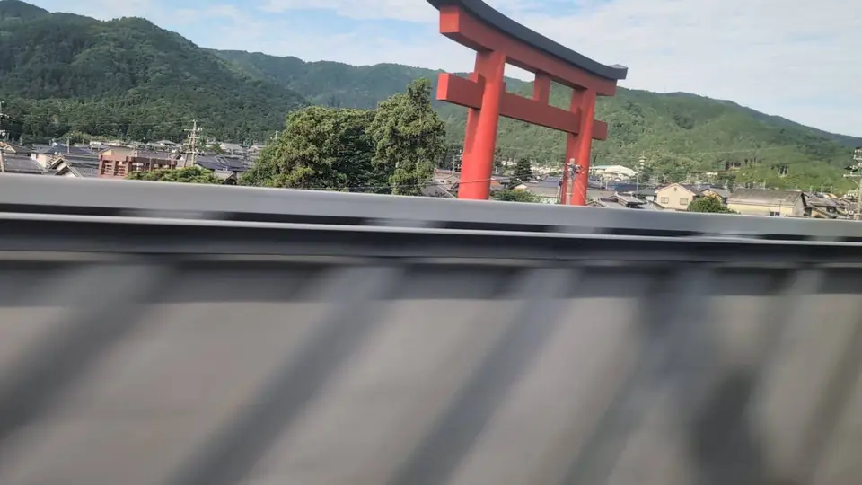

01 / 日常日本
從記憶中的形狀開始
這些不是為列車乘客設置的觀光景點，而是運作中的農田、工廠、運動設施與宗教標記——日本日常的一部分，從車窗一閃而過時卻令人驚喜。

那些鮮綠的行列是什麼？
答案靜岡的茶田
茶樹被修剪成長長的圓弧形樹籬，沿著丘陵起伏排列。春天第一批嫩葉讓茶田呈現鮮明的黃綠色，是靜岡代表性的風景之一。
再看一眼。 那些風扇呢？茶樹上方的螺旋槳是防霜風扇。寒冷的春夜裡，它們將上方相對溫暖的空氣向下吹，保護柔嫩的新芽。

富士山下為什麼有那麼多煙囪？
答案富士市的造紙廠
富士是日本重要的造紙城市之一。工廠利用富士山豐沛的地下水與富士川的工業用水發展起來；你注意到的白色羽狀氣體，是這片工業風景中的蒸氣。
再看一眼。 看過富士山後，繼續留意E席一側。抵達新富士前約一分鐘，近景從田野轉為煙囪、儲槽與管線。

那些長長的銀色屋頂是什麼？
答案東三河農業地帶的溫室
這些在日本常被稱為「塑膠溫室」的棚屋，帶你走入盛產番茄、柑橘、香草與花卉的地區。每棟裡的作物看不見，但銀色屋頂、灌溉用水與紅色柑橘招牌都有故事。
再看一眼。 蒲郡的溫室柑橘在春夏上市。愛知其他地區的農民則用燈光調整菊花的開花時間。認識日本食物與花卉背後的工作。

那些巨大的綠網是什麼？
答案高爾夫練習場——日語稱為uchippanashi
網子可防止高爾夫球飛入附近住宅與道路。在日本城市裡，許多練習場的打擊席設在兩三層樓上，因此練球的地方看起來像一座巨大籠子。
再看一眼。 這一座在米原與京都之間的E席一側一閃而過，前方是瓦屋頂，後方是林木覆蓋的小山。這種形式並非日本獨有，但在這裡是常見的都市景象。Uchippanashi（打ちっぱなし）大致意為「一直打球」。

田野中為什麼有一座巨大的紅色鳥居？
答案南宮大社的大鳥居
鳥居標示通往神社的入口。這一座距離南宮大社本殿約一公里，橫跨道路，在神殿進入視野前就宣告神社參道的開始。
再看一眼。 它高逾21公尺，在岐阜羽島與米原之間的A席一側掠過。周圍低矮的農田讓紅色鳥居顯得更加巨大。
02 / 近鐵 · 奈良與三重
近鐵沿線的宮殿遺址與巨像
這兩處風景位於近鐵的傳統鐵路線，並非東海道新幹線。請確認下方路線與地點；本網站的新幹線時刻及座位指引不適用於此。
 開啟 X 影片
開啟 X 影片奈良の車窓から。#平城宮跡 #朱雀門 #近鉄
— @fuku_musuko Original post
鐵軌外的紅門與宮殿？
答案： 平城宮的朱雀門與大極殿
近鐵奈良線穿越平城宮遺址。搭乘往近鐵奈良方向的列車時，向右看朱雀門，向左遠望大極殿。兩座建築都是重建的。鐵路於1914年通車，比宮殿遺址被列入世界遺產早得多。
 開啟 X 影片
開啟 X 影片近鉄榊原温泉口駅から見える、今日のルーブル彫刻美術館。
— @Haatainen Original post
金色觀音與巨大的有翼雕像？
答案： 大觀音寺與羅浮宮雕刻美術館
33公尺高的金色觀音屬於大觀音寺。附近的羅浮宮雕刻美術館在戶外展示巨大的薩莫色雷斯勝利女神與米洛的維納斯雕像。它們位於近鐵大阪線榊原溫泉口站附近，從車站也能步行造訪。
記得看過727看板嗎？
 在727照片與地點索引中找出你看見的看板 →
在727照片與地點索引中找出你看見的看板 →比較照片，再用地圖或沿線地點清單找出你看見它的位置。
若想欣賞東海道新幹線車窗風景，可選擇列車查看預估通過時間，或瀏覽完整圖鑑，探索城堡、看板、河流等景物。
關於這些風景
我們的照片拍攝於東海道新幹線車窗。時間以Nozomi為基準估算，請提早開始留意。獨立的近鐵章節使用已標示創作者的X原始影片。載入影片會連線至X，也可直接開啟原始貼文。近鐵風景不包含在新幹線時間軸中。